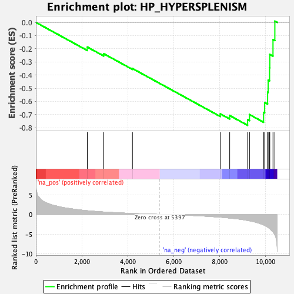
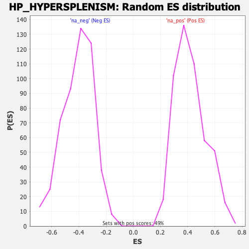

| Dataset | qlf.KOd4vsWTd4_gsea_score |
| Phenotype | NoPhenotypeAvailable |
| Upregulated in class | na_neg |
| GeneSet | HP_HYPERSPLENISM |
| Enrichment Score (ES) | -0.7815346 |
| Normalized Enrichment Score (NES) | -1.9297061 |
| Nominal p-value | 0.0 |
| FDR q-value | 0.020802837 |
| FWER p-Value | 0.32 |

| SYMBOL | RANK IN GENE LIST | RANK METRIC SCORE | RUNNING ES | CORE ENRICHMENT | |
|---|---|---|---|---|---|
| 1 | SRSF2 | 2240 | 0.930 | -0.1872 | No |
| 2 | PRKCD | 2954 | 0.612 | -0.2379 | No |
| 3 | TET2 | 4204 | 0.240 | -0.3501 | No |
| 4 | CBL | 8029 | -0.704 | -0.6947 | No |
| 5 | ITCH | 8439 | -0.936 | -0.7072 | No |
| 6 | RASGRP1 | 9220 | -1.545 | -0.7379 | Yes |
| 7 | ASXL1 | 9301 | -1.619 | -0.6999 | Yes |
| 8 | NOTCH1 | 9915 | -2.659 | -0.6832 | Yes |
| 9 | GBA | 9961 | -2.800 | -0.6085 | Yes |
| 10 | SMPD1 | 10090 | -3.218 | -0.5299 | Yes |
| 11 | PSAP | 10113 | -3.316 | -0.4384 | Yes |
| 12 | RUNX1 | 10175 | -3.543 | -0.3442 | Yes |
| 13 | FAS | 10185 | -3.610 | -0.2432 | Yes |
| 14 | SCARB2 | 10324 | -4.466 | -0.1303 | Yes |
| 15 | LIPA | 10405 | -5.234 | 0.0098 | Yes |
